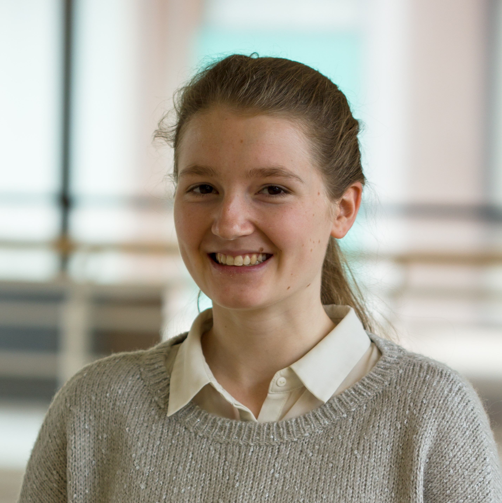

I am currently pursuing my Master's Degree in Cognitive Science at the Univeristy of Tuebingen.
My research interest lies in the intersection of Machine Learning, Health, and Neuroscience.
Body movement has fascinated me since I started dancing. Learning about the brain controlling motor actions has led to a general curiosity about the nervous system, its function, and pathological aberrations.
Clinical practice and research in psychiatry and neuroscience are currently advancing into a data-driven and objective approach by means of advanced methodology.
My goal is to contribute to this advance through research in computational neuroscience/medicine.
Curriculum Vitae (Updated May 2020)
Why computational neuroscience/medicine?
Currently, diagnosis and treatment selection especially in psychiatry rely, on self-report and subjective decisions made by physicians.
Augmenting their decision process by means of Machine Learning tools could largely fasten and objectify this process.
Visualizing medical data in a human comprehensible way or providing propositions and related uncertainties are possible augmentations.
An automatic, data-driven assessment of a patient’s health status can considerably alleviate the workload of physicians, enable early disease detection and extract meaningful insights from the abundance of the medical data available.
Oustide of Academia

photo by Knut Reimann
I have been dancing ballet since the age of 8. What started as a fun freetime activity has become a huge part of my life.
Most of my freetime, I like to spend with dancing in some way. Be it through taking dance classes, watching videos
on youtube, or reading about the anatomy of dance.
Memorizing choreographies, improving my technique, and really exhausting myself are things I enjoy in ballet classes.
M. Sc. in Cognitive Science (focusing on Machine Learning, Computational Psychiatry/Neuroscience)
I am currently pursuing my Master's degree in Cognitive Science at the University of Tuebingen.
I focussed on improving my methodological skills through courses about ML, Statistics and Data Literacy.
Seminars on Computational Psychiatry and trends in deep learning for medicine have influenced my research interests the most.
B. Sc. in Cognitive Science
Throughout my Bachelor at the University of Osnabrück I was able to explore the various fields of Cognitive Science.
I gained solid knowledge and skills in a broad range of fields including Neuroinformatics, Mathematics, Computer Science, Neuropsychology, and Neurobiology.
Neuronal Intelligence Lab
I am currently writing my Master's Thesis at the Neuronal Intelligence lab led by Fabian Sinz.
My main thesis objective is to model the trajectories of cognitive and motor aging in healthy elderly.
By understanding the influence of risk factors from various domains (genetics, lifestyle, neuropathology, metabolism)
on the trajectories, an earlier diagnosis and a targeted treatment of pathological aging (Alzheimer’s or Parkinson’s disease) could be achieved.
In neurodegenerative diseases, the neurophysiological changes precede the clinical symptoms by several years, thus an early diagnosis and treatment is of high importance.
Longitudinal data of healthy elderly with and without prodromal markers including genetic, metabolic, lifestyle, biomarker and medical health record data will be analyzed
using baseline models like linear mixed effect models and advanced Bayesian modeling.
Lab Website
Neuroscience of Motivation, Action, and Desire Laboratory
During my laboratory internship at NeuroMADLAB, I analyzed the reliability of functional connectivity biomarkers for Major Depressive Disorder in a multi-site dataset.
In this mega-analysis I investigate the functional connectivity aberrations within and between large-scale brain networks in MDD using group-level models and supervised learning.
Working with fMRI data and a dataset from multiple sources, I gained insights in the research practices and put my theoretical knowledge to practice.
Lab Website
Bachelor's Thesis
In my Bachelor's Thesis I was able to I gain hands-on experience about the power of those tools in the field of EEG-based Brain-Computer-Interfaces.
I investigated whether EEG data acquired with the Traumschreiber, a portable hightech sleep mask, is usable for traditional and single-trial analysis needed for Brain Computer Interfaces.
Short Summary of Bachelor's Thesis
ann-kathrin.schalkamp@student.uni-tuebingen.com |
aschalkamp |
Ann-Kathrin Schalkamp
@ASchalkamp |